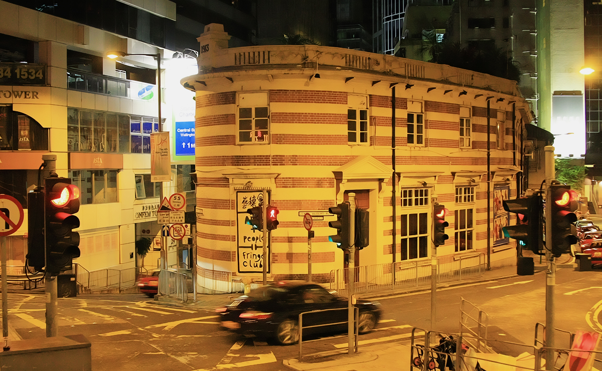
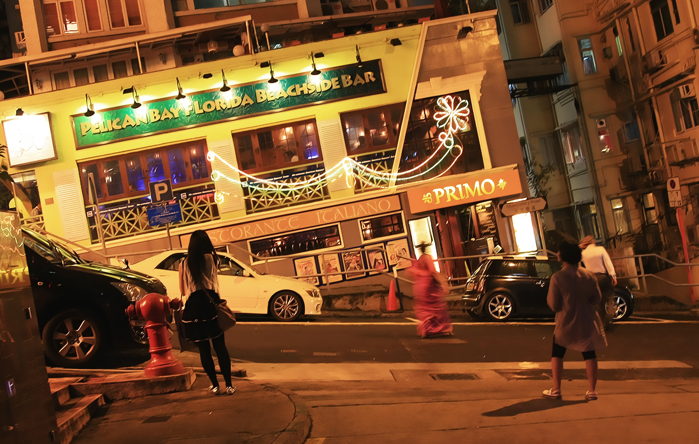

以前说一个城市爬坡上坎的地方多，多半就觉得是重庆，没想到香港也有那么多陡坡。依太平山而建的港岛处处是陡坡，在我们吭哧吭哧暴走了两天之后，再去对面的九龙半岛走平路都抬不动脚了。只可惜旅途时间太赶，其实香港的坡道很适合慢慢逛，半山往上安静清幽，半山往下热闹生动。第一晚还好我们没走路上太平山，要知道后来半夜走路下山时，差点以为自己第二天不能再走了。不过时间充裕的话，旧山顶道还是一条值得慢慢晃悠的小坡路，没什么人，就着昏黄的路灯，一边看着夜景一边就慢慢陷进夜色中了。下来的斜坡路上还经过动物园，黑漆漆的一片。

香港很多路口都有不少岔路，有个三四条分岔很常见。但离兰桂坊不远的一个路口居然6、7条岔路，每条岔路口都有红绿灯，很是壮观。岔路多，自然转角就多。以前在内地旅行总是喜欢那些有大转角的地方，青岛就有一些有名的转角，但到了香港才知道，以前去过的那些都太小儿科。倒不仅因为转角幅度大，转角多，而是加上斜坡，干净的路面，不多的行人，还有周围繁茂的绿色植物，所有元素加在一起才有了完美的转角。
